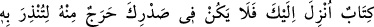
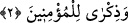

sûrenin ismidir. Yahut her harfi Allah’ın isimlerinden birine işârettir. İlâh, Lâtîf, Melik,
Sabûr gibi. Ya da her bir harf bir sıfattan kinâyedir. İkram, lütuf, mecd ve sıdk gibi.
Veyahut da el-Musavvir ismine îmâdır. Veya bir kısmı isimlere, bir kısmı da fiillere
delâlet eder. Takdiri şöyledir: (Enallahu a‘lemu ve efdalu) Ben Allah’ım ki, biliyorum
ve açıklıyorum veya herkesten daha bilgiliyim ve hakkı bâtıldan ayırırım.
Sülemî’nin Hakâyık’ında şu bilgi vardır: Elif ezeldir, lâm ebed. Mîm, ezel ve ebed
arasıdır. Sâd, her muttasılın ittisâline, her munfasılın infisâline işarettir. Yani Cenâb-ı
Hakk’a manevî yakınlığa erenlerin ittisaline ve O’ndan mânen uzaklaşanların da
infisaline işarettir. Gerçekte ne ittisâl kabil, ne de infisâl mümkündür. Yani, Hak’tan
ayrı gayri bir şey yoktur. Cümle eşya Hak ile kâimdir.
Bu nasıl bir yol? Fasıl ve vaslın dışında
İçine fer sığar, asıl değil
Ne meânî, ne ibâre ne ayân
Ne hakâyık, ne işâret, ne beyân
Akıl ve vehim delillerinden daha üstün
Fikir ve idrak onda kayboldu şüphesiz
Kül’e vardığın zaman söz/dedikodu yoktur
Hiç kimsenin suskunluktan başka yaptığı yoktur
Fakir Bursevî -Allah günahlarını affetsin- derim ki: Mukattaa harfleri, Kur’an’ın
müteşâbih ayetlerindendir. Bunların mahiyeti akılla idrak edilemez. Mukattaa harflerinin
anlamının ne olduğu ancak, Hakk’a vâsıl olanlara bildirilmiştir. Onun için bu harflerin
mânâsı ve hakikatına dair söylenen sözler, hakikatın kırıntılarıdır. Onların mânâsını ve
muhtevâsını hakkıyle ifade etmekten uzak tahminlerdir.
Biz bu konuda şunları diyebiliriz: “Bu harflerde şuna işaret vardır: Bir ve ebedî olan
ilâhî sıfatlarla ve fiillerle ilgili olan bu terkib (şehâdet âlemi), zâtî ve ezelî vahdet
mertebesinde tek tek (ayrı ayrı) idi. İlâhî tecellî ile tek, mürekkeb oldu. Ayrı olan
birleşti, kuvve hâlinde olan fiile dönüştü. Cem‘, fark oldu. Nisbet ve izafetler taayyün
etti. Nitekim söz terkiblerinin aslı, alfabedeki harflerdir. Harflerin birleşmesi ile
terkipler, kelimeler ve cümleler meydana gelir. İnsanın bedeninin meydana gelişi de
böyledir. Önce nutfedir. Sonra ona şekil verilmesiyle cisminin terkibi meydana gelir.
Doğrusunu en iyi Allah bilir.
2. (Bu), kendisiyle insanları uyarman, inananlara öğüt vermen için sana indirilen
bir kitaptır. Artık bu hususta kalbinde bir şüphe olmasın.